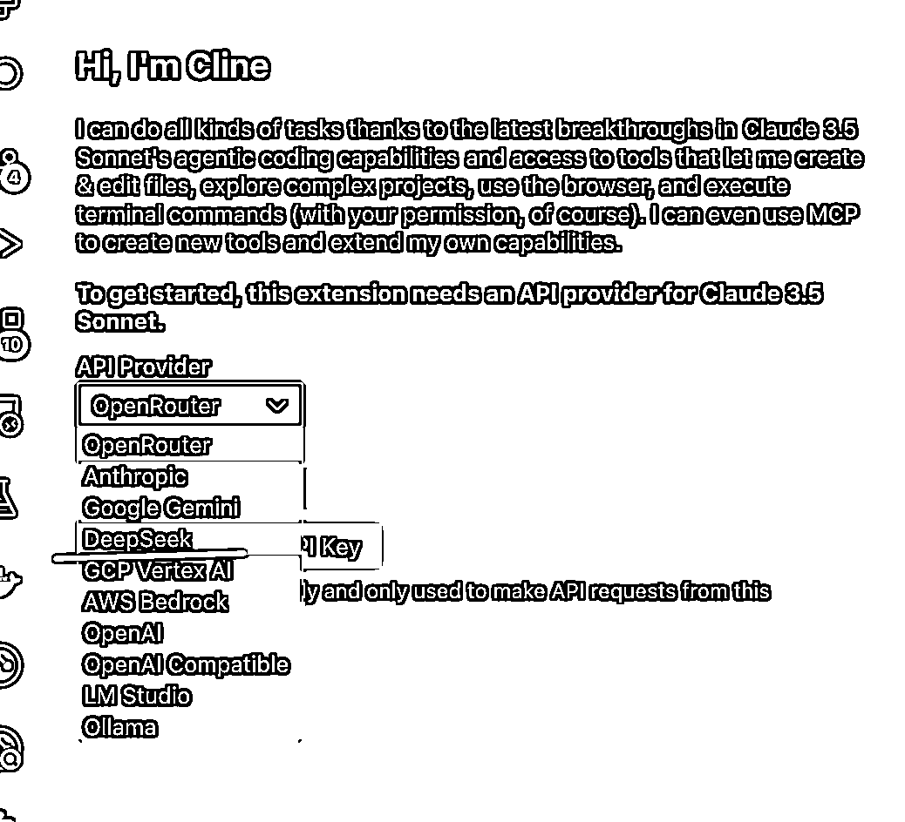

来源：https://vqxvy65apk2.feishu.cn/docx/YjuGd682Qot9DbxQicmcfY43nUc
最近总是感觉cursor响应缓慢，国产大模型deepseek又一直听到很好的反响。
在目前大模型主流榜单中，DeepSeek-V3 在开源模型中位列榜首，与世界上最先进的闭源模型不分伯仲。
遂试之，毕竟相比于cursor，deepseek响应又快，又便宜。就看实际回答质量了。
现在，让我们开始配置使用环境吧
VS code和cursor一样，严谨的说cursor是在vs code的基础上开发的，也就是vscode是cursor他爹, 所以不需要担心换了个软件就不会了。
打开 https://code.visualstudio.com/ 网站，选择对应的系统下载安装即可
打开左侧插件栏，搜索cline, 注意别装错了， 装下载量高的这个
打开deepseek官网：https://www.deepseek.com/ 选择接入api
输入手机号注册即可
可以看到免费送10块钱，500万的token，够用很久了。
创建apikey
记得存好，不要丢了。
回到vs code，打开我们刚刚安装的插件页
选择deepseek

在自定义提示词中可以像cursor一样输入：Always respond in 中文 ，这样他只会用中文回答你
然后关闭
接着我们点开这个选项
将所有勾勾勾上
好了， 现在所有配置就完成啦。
如果你想让他像cursor一样在右边，你可以这样
我们试试让他完成一个贪吃蛇吧~
还是一样，我们找个地方创建一个文件夹，然后打开它
输入提示词：帮我在这个项目下，完成一个贪吃蛇小游戏，用网页写
接下来，你会感受到不一样的世界，我录了个视频，一起感受下吧
效果有没有很棒？
运行有问题很正常，提示词写的很简单，我觉得都可以理解。
完！